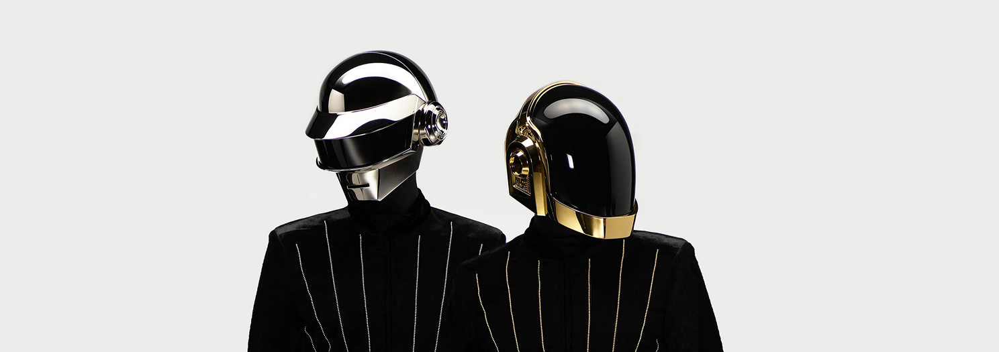

Daft Punk
20,795,080 monthly listeners
As they evolved from '90s French house pioneers to 2000s dance tastemakers to mainstream heroes in the 2010s, Daft Punk remained one of dance music's most iconic acts. With their early singles and 1997's instant-classic debut album Homework, Guy-Manuel de Homem-Christo and Thomas Bangalter quickly won acclaim for their skill at blending their beloved Chicago house and Detroit techno with pop, funk, indie rock, and hip-hop into nostalgic yet futuristic forms. Not content to just widen electronic music's popularity, on 2001's Discovery they reinvented the then-unfashionable sounds of mid-'80s soft rock and R&B into stylish tracks that also had a childlike wonder. Despite their sizable popularity, Daft Punk were never afraid to challenge their listeners, which they did with 2005's cold and dystopic Human After All. Even when they polarized their audience, there was never any doubt that they staged groundbreaking concerts, and the tour captured on Alive 2007 helped pave the way for arena-sized EDM, particularly in the U.S. With 2013's Random Access Memories, the duo once again looked to the past to create the future, borrowing from prog, disco, and a laid-back West Coast vibe that bucked the predominant trends in electronic music but still resonated with a wide audience. Daft Punk's influence reached further into the mainstream through collaborations with Kanye West and the Weeknd, and the duo's music was sampled by artists ranging from Missy Elliott to the Fall. Though they reinvented themselves continually, wherever Daft Punk went, the rest of pop music followed. After meeting in 1987 as students at Paris' Lycée Carnot secondary school, Bangalter and de Homem-Christo became friends and soon started making music together. In 1992, they formed the band Darlin'. Named after a Beach Boys song, the group featured Bangalter on bass, de Homem-Christo on guitar, and additional guitarist Laurent Brancowitz. Darlin's career was brief: The trio recorded a cover of their namesake song that appeared, along with an original song, on a various artists EP released by Stereolab's label Duophonic (the band also invited Darlin' to play some U.K. shows with them). Following a Melody Maker review that described Darlin's music as "a daft punky thrash," the band broke up. Bangalter and de Homem-Christo began experimenting with electronic music, taking their new project's name from that review and drawing inspiration from pioneers such as Todd Edwards, Juan Atkins, Kraftwerk, Frankie Knuckles, and many more. By September 1993, Daft Punk had readied a demo tape, which they gave to Soma co-founder Stuart MacMillan at a rave at EuroDisney. The label released the duo's debut single, "The New Wave," in April 1994. Instantly hailed by the dance music press as the work of a new breed of house innovators, it was followed by May 1995's "Da Funk," the band's first true hit (the record sold 30,000 copies worldwide and saw thorough rinsings by everyone from Kris Needs to the Chemical Brothers). In 1996, the buzz around Daft Punk led them to sign with Virgin, and the label released the single "Da Funk"/"Musique" that year. Recorded and mixed at the duo's Paris studio Daft House, January 1997's debut album Homework -- named for Daft Punk's D.I.Y. aesthetic -- was a critical and commercial success. The album reached number three in France and stayed on the chart for over a year, while the singles "Da Funk," "Around the World," "Burnin'," and "Revolution 909" charted in France, the U.K., the U.S., and Australia. The duo supported the record with the Daftendirekt tour, while the Homework video collection D.A.F.T.: A Story about Dogs, Androids, Firemen and Tomatoes followed in 1999 and featured clips directed by Roman Coppola, Michel Gondry, and Spike Jonze. To follow their breakthrough debut album, de Homem-Christo and Bangalter reached back to their childhoods in the '70s and '80s and sought to fuse technology with humanity. Once again recorded at Daft House, March 2001's Discovery incorporated disco and synth pop as well as house, garage, and R&B into a sleek, retro-futuristic sound that matched the robotic helmets and gloves the duo introduced with the release of the album. Featuring contributions from heroes such as Romanthony, Edwards, and DJ Sneak, Discovery was an even bigger hit than its predecessor. The album peaked at number two in France and the U.K., while the singles "One More Time," "Digital Love," "Harder, Faster, Better, Stronger," and "Face to Face" also charted in the U.K. and the U.S. That November saw the release of Alive 1997, an edit of the duo's Birmingham, England stop on the Daftendirekt tour. Daft Punk capped the Discovery era in 2003 with Interstella 5555: The 5tory of the 5ecret 5tar 5ystem, an animated film they produced with anime and manga creator Leiji Matsumoto that used the album as its soundtrack. For Daft Punk's third album, the duo took a drastically different approach. Created in six weeks -- as opposed to the two years they spent making Discovery -- with a handful of gear that included an eight-track machine, March 2005's Human After All was a deliberately raw, stark set of songs inspired by George Orwell's Nineteen Eighty-Four. Though its cold, repetitive feel drew polarized reactions, the album fared well commercially: Human After All reached number three in France, was a Top Ten hit in the U.K., and hit number one on the Billboard Top Dance/Electronic Albums chart in the U.S. The set was also nominated for Best Electronic/Dance Album at the 2006 Grammy Awards. Shortly after its release, Human After All [Remixes] collected reworkings by Soulwax, Digitalism, and Erol Alkan among others. April 2006 saw the arrival of Musique, Vol. 1: 1993-2005, a compilation of the duo's best-known songs and remixes accompanied by the videos for Human After All's singles. That May, Daft Punk premiered their film Electroma at the Director's Fortnight at that year's Cannes Film Festival. An experimental sci-fi film about a pair of robots seeking to become human, it began as the video for Human After All's title track before expanding into a feature film (unlike Interstella 5555, the movie did not feature any of Daft Punk's music). Initially earning mixed reviews, over time Electroma won a cult audience. That year, the duo embarked on the Alive tour, which lasted through 2007 and featured some of Daft Punk's most ambitiously staged live sets. Appearing in November 2007, Alive 2007 documented the tour. Early in 2009, the album and its single "Harder, Better, Faster, Stronger" won Grammy Awards. Daft Punk returned with new music in November 2010 in the form of the score to Joseph Kosinski's feature film Tron: Legacy. A collaboration with Joseph Trapanese, who arranged and orchestrated the pair's compositions, it featured an 85-piece orchestra as well as Daft Punk's signature electronics. Bangalter and de Homem-Christo also appeared in the film in a brief cameo. The soundtrack eventually reached number four on the Billboard 200 Albums chart in the U.S. and was nominated for a Best Score Soundtrack Album for Visual Media Grammy Award. Also in 2010, the duo were admitted into the Ordre des Arts et des Lettres, with de Homem-Christo and Bangalter each receiving the rank of Chevalier. The following year saw the April release of the remix album Tron: Legacy Reconfigured, while that September's compilation Soma Records: 20 Years featured the track "Drive," an early recording that was believed to be lost. For their fourth album, Daft Punk once again took a different creative tack. Seeking a breezy feel informed by Fleetwood Mac, the Eagles, and Jean Michel Jarre, the duo emphasized live instrumentation and collaborated with artists including Nile Rodgers, Paul Williams, Giorgio Moroder, and Panda Bear. Pharrell Williams appeared on the single "Get Lucky," which preceded the release of the full-length Random Access Memories in May 2013. Recorded in California, New York City, and Paris and spanning disco, prog, and indie influences, the album became one of Daft Punk's biggest successes. It topped the charts in over 20 countries including the U.S., where it became the duo's first number one album and was eventually certified platinum. It also won Grammy Awards for Best Dance/Electronica Album, Album of the Year, and Best Engineered Album, Non-Classical. "Get Lucky" hit number one in over 30 countries and earned Grammys for Best Pop Duo/Group Performance and Record of the Year. That year, Daft Punk also co-produced Kanye West's critically acclaimed album Yeezus, and worked on tracks including the single "Black Skinhead." In 2014, the duo appeared on Pharrell's album G I R L and collaborated with Jay-Z on the song "Computerized." A 2015 documentary titled Daft Punk Unchained charted their history from the '90s into the 2010s, featuring interviews with Rodgers, Pharrell, and West, among others. In turn, the duo appeared in that year's Rodgers documentary Nile Rodgers: From Disco to Daft Punk. During the latter half of the 2010s, Daft Punk remained active. They teamed up with the Weeknd's Abel Tesfaye on a pair of songs from his 2016 album Starboy, including the chart-topping title track. The following year, the duo performed with the Weeknd at the 59th Annual Grammy Awards; later in 2017, they co-wrote and produced Parcels' "Overnight." During this time, Daft Punk's members also worked on separate projects. Bangalter co-produced Arcade Fire's 2017 album Everything Now and contributed pieces to the soundtrack to Gaspar Noé's 2018 film Climax, while de Homem-Christo co-wrote and produced tracks for Charlotte Gainsbourg's 2017 album Rest and the Weeknd's 2018 EP My Dear Melancholy,. In 2019, Daft Punk were featured in the Philharmonie de Paris' exhibition Electro, which traced the history of electronic music and its influence on visual arts. In February 2021, the duo disbanded, spreading the news with a YouTube video that featured scenes from the end of Electroma. To commemorate the tenth anniversary of Random Access Memories in 2023, Daft Punk issued a pair of re-releases of the album. In May, a deluxe edition of the album featuring unreleased demos (including "Infinity Repeating," which featured Julian Casablancas & the Voidz), outtakes and the version of "Touch" that soundtracked the duo's breakup announcement appeared. The reissue topped the Billboard Dance/Electronic Albums Chart and reached the Top Ten of the Billboard 200 Albums Chart. That November saw the release of a drumless version of the album. ~ Heather Phares & Sean Cooper, Rovi
9,868,787
Followers22,430,353
Monthly ListenersParis, FR
391,036 listenersMexico City, MX
367,878 listeners
Playlists
Playlists by Spotify
Albums
Folders
Artists
Get Lucky
Daft PunkRandom Access Memories